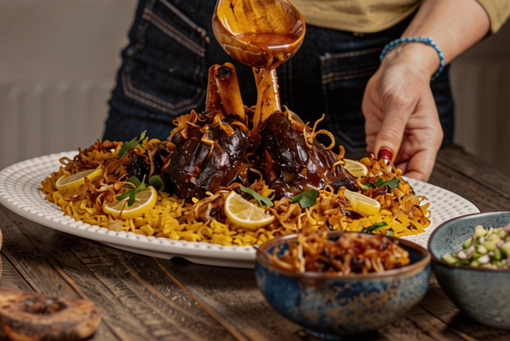
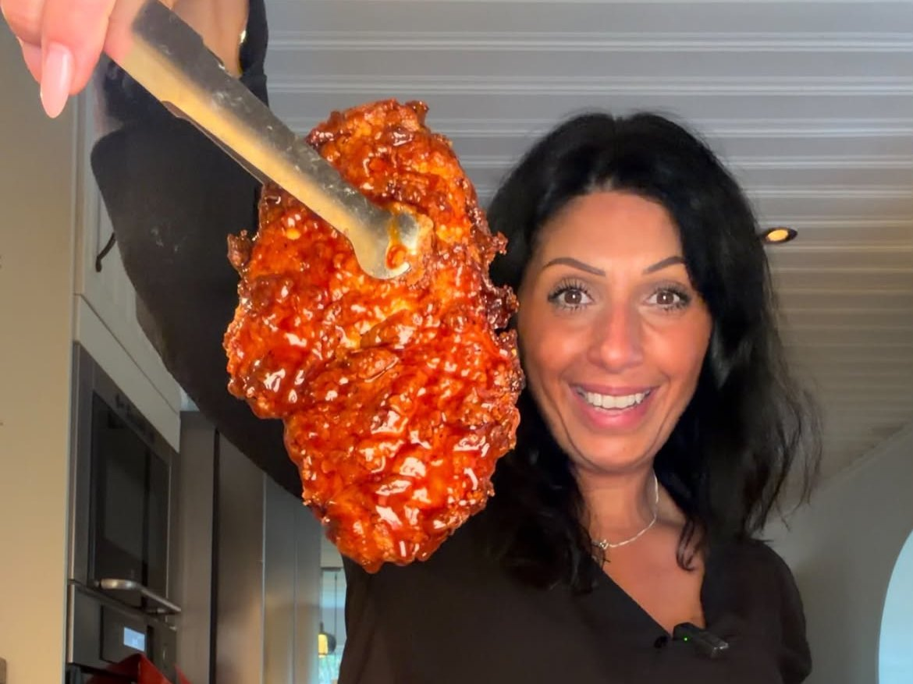
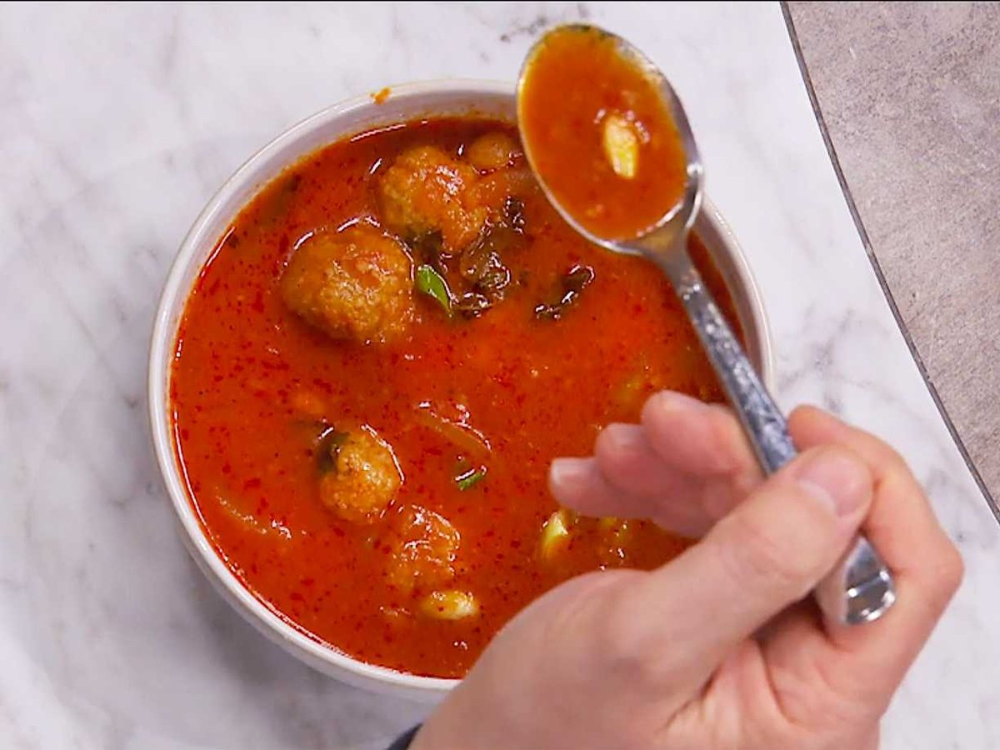
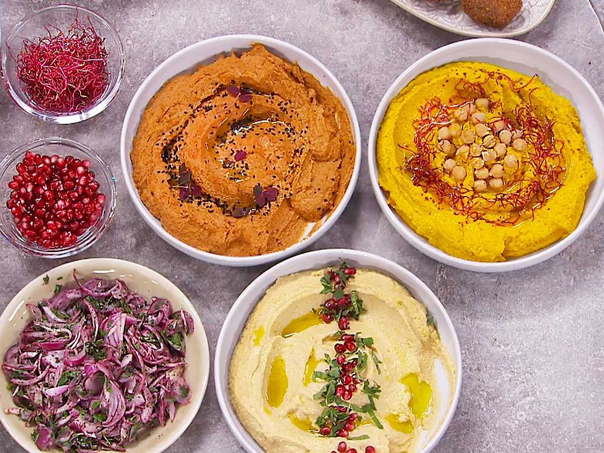
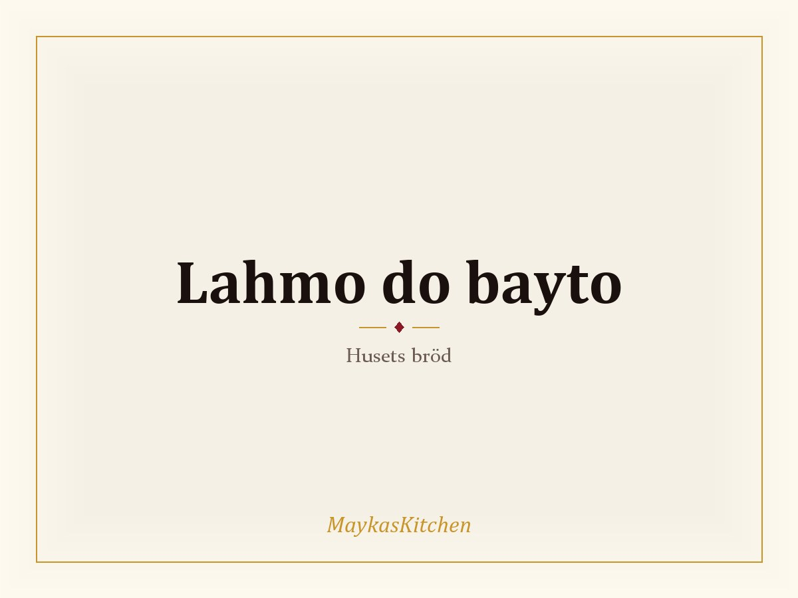

Populärt
120 min
Qrimyothe – Mormors munkar 🍩
Mamma berättar om mormors kärlek i varje tugga. Mer än bara ett recept – ett stycke historia.
Säsongsbaserad matlagning som skapar glädje runt bordet
för hela familjen – med autentiska assyriska/syrianska rötter.


Mayka är kokboksförfattare till Maykas gröna kök – Kutle, hummus och kärlek och lagar mat med assyriska och syrianska rötter.
En unik eftermiddag där mat, smaker och inspiration står i centrum. Mayka bjuder på en personlig matupplevelse med berättelser, matlagning, frågor och svar – och självklart möjlighet att smaka på maten.
Allt i Standard, plus:
Autentiska assyriska och syrianska rätter kombinerade med moderna smaker – enkla tillagningsmetoder och djupa, äkta smaker som hela familjen älskar.
Mamma berättar om mormors kärlek i varje tugga. Mer än bara ett recept – ett stycke historia.
En gryta som kramar om både hjärta och smaklökar – den krämigaste tikka masalan du kan tänka dig.
Perfekt som fräsch vardagsmiddag eller när du vill lyxa till lunchen. Snabbt, enkelt och smakrikt.
Traditionell rätt från Mellanöstern med saftiga köttbullar och potatis i smakrik tomatsås.
Proteinrika vegetariska järpar med linser, bulgur och sumak – fylliga smaker från Mellanöstern.
Syrisk ugnsrätt med kryddig köttfärs, potatis och padron paprika i mustig tomatsås.

Krispig friterad kyckling med kladdig BBQ- och ketchupglaze och en snabb vitlöksmajonnäs. Perfekt fredagsmiddag!

Smakrik och proteinrik assyrisk/syriansk kikärtsgryta med bulgurbollar.

Grundreceptet plus två smaksättningar – krämig, syrlig och supergod.

Husets bröd – mjuk deg som gräddas till gyllene, fluffiga bröd.
17+ autentiska recept från Mayka
Maykas gröna kök – Kutle, hummus och kärlek. En resa genom smak, traditioner och kärlek.
Köp boken på Bokus →Matlagning, recept och berättelser som engagerar – redo för nästa projekt.
Samarbeten hanteras av J&J Management. Vi arbetar bland annat med:
Nya recept, säsongsinspiration och exklusiva erbjudanden – gratis varje månad.
Följ Maykas Kitchen
Välj den kanal du gillar bäst.
Finns även på TikTok · YouTube · Facebook